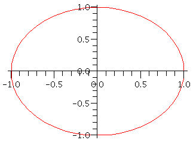
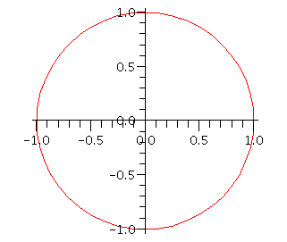
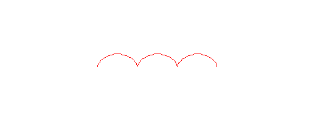
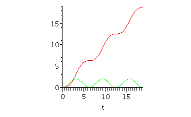
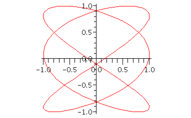
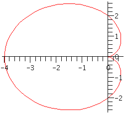
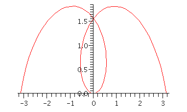
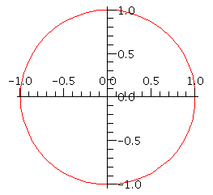

| > | restart; |
Parametric curves and polar coordinates
Parametric curves
The same plot command that works for curves in the form y=f(x) also works for parametric curves, when both x and y are functions of another independent variable t.
| > | x:= t->cos(t): y:= t->sin(t): |
| > | plot( [x(t),y(t),t=0..2*Pi] ); |

The result may look like an ellipse instead of a true circle. This is because the two axes can be stretched independently for the display. To make sure that a unit in x always has the same length as a unit in y, you add a special option to the plot (or use a right-click menu on the graph):
| > | plot( [x(t),y(t),t=0..2*Pi], scaling=constrained ); |

Here is the graph of a cycloid (page 690 in Stewart):
| > | plot( [t-sin(t), 1-cos(t), t=0..6*Pi], scaling=constrained); |

Notice carefully the difference in syntax from the following, which does not give a parametric curve:
| > | plot( [t-sin(t), 1-cos(t)], t=0..6*Pi, scaling=constrained); |

The following is known as a kind of Lissajous figure. You can see them on old-fashioned oscilloscopes in the backgrounds of some B-movies.
| > | plot( [ sin(3*t+5/2), cos(2*t), t=0..2*Pi ], scaling=constrained ); |

| > |
Polar coordinates
The most useful aspect of Maple with polar coordinates is in graphing a curve represented by r=f(θ). To use this, load the plots package first.
| > | with(plots): |
Then, give polarplot the expression f(θ).
| > | polarplot( 2*(1-cos(theta)) ); |

| > | polarplot( theta ); |

| > | polarplot( 1, scaling=constrained ); |
